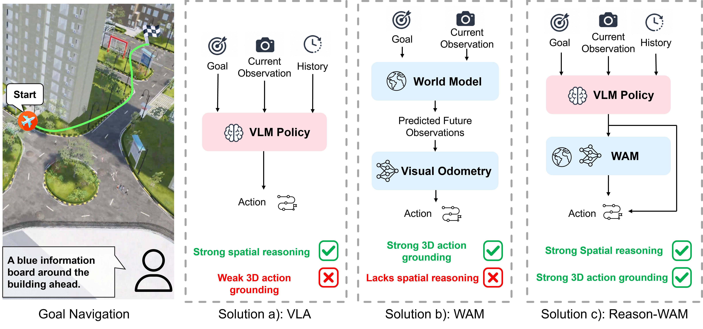
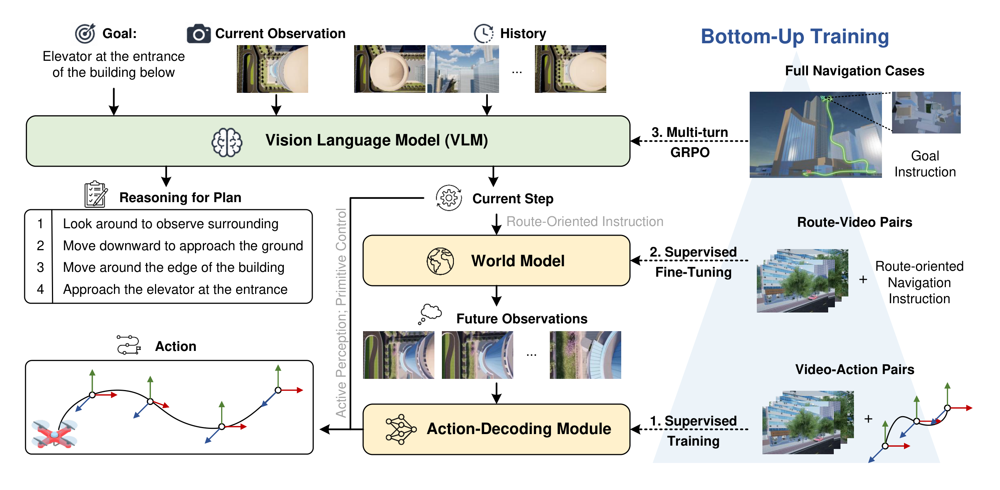
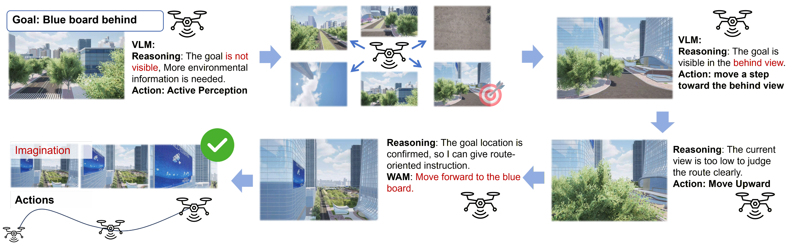
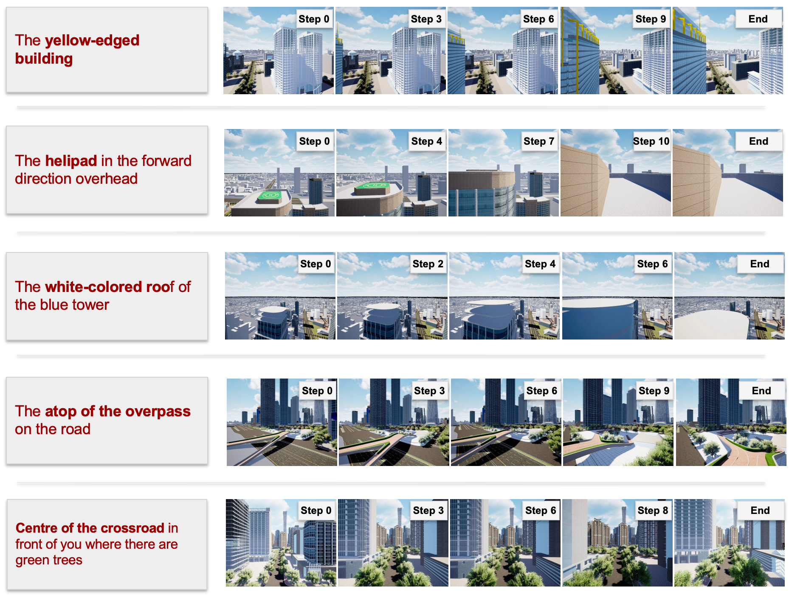
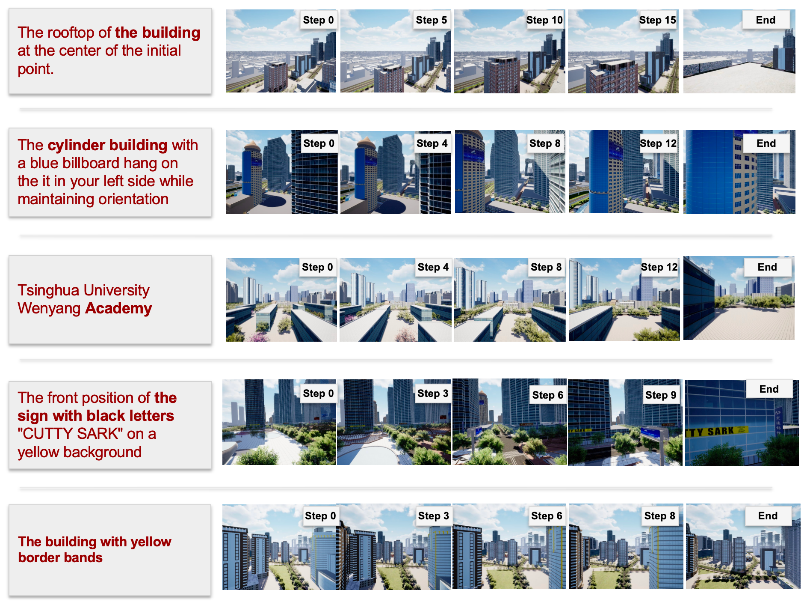

VLM Planner
Reasons over the current observation, interaction history, and sparse goal to decide the next step.
A hierarchical navigation framework that couples VLM-based goal reasoning with world-action-model grounding for sparse-language, continuous 3D urban aerial navigation.

Abstract
Goal navigation is a fundamental problem in embodied intelligence, requiring an agent to reach a target specified by a sparse natural-language goal. The task inherently demands both high-level spatial reasoning for goal interpretation and route planning, and low-level action grounding for executable control. World Action Models (WAMs) provide a promising action-grounding paradigm by predicting future visual states and recovering actions through inverse dynamics, but they are typically limited to simple and short-horizon tasks.
We propose Reason-WAM, a hierarchical navigation framework in which a VLM performs goal reasoning and route planning, then drives the WAM to transform route-level intents into executable actions. A bottom-up training framework first grounds visual transitions into actions, then learns instruction-conditioned visual dynamics, and finally optimizes the VLM planner with multi-turn GRPO for closed-loop decision-making. Experiments on a public urban aerial goal-navigation benchmark show that Reason-WAM achieves state-of-the-art performance by combining the high-level reasoning strength of VLMs with the spatial action grounding capability of WAMs.
Method
The VLM remains responsible for long-horizon goal decomposition and interface selection, while the WAM provides local metric grounding by imagining how the visual state should change under a route-oriented instruction.

Reason-WAM combines a reasoning planner, instruction-conditioned visual world model, and inverse action decoder into a closed-loop navigation system.
Reasons over the current observation, interaction history, and sparse goal to decide the next step.
When invoked, predicts a short visual rollout conditioned on the selected view and local route instruction.
Recovers executable relative 6-DoF motion from the predicted visual transition and closes the loop.
Training
Reason-WAM first learns the action decoder from video-trajectory pairs, then fine-tunes the world model on route-oriented instruction-video pairs, and finally optimizes the VLM planner with multi-turn GRPO in closed-loop rollouts.
The planner can acquire additional surrounding views, issue primitive control commands, or write route-level VLN instructions that require WAM-based grounding.
Results
Reason-WAM achieves the best average SR and SPL across short, middle, and long episodes, showing the value of coordinated semantic decomposition and metric action grounding.
| Method | Short SR | Middle SR | Long SR | Avg SR | Avg SPL | Avg NE |
|---|---|---|---|---|---|---|
| GPT-4.1 | 51.5 | 15.2 | 6.3 | 24.3 | 22.2 | 113.0 |
| GPT-5.1 | 52.9 | 30.4 | 18.2 | 34.0 | 32.0 | 107.0 |
| Qwen3-VL (SFT) | 48.5 | 27.3 | 8.8 | 28.0 | 27.0 | 131.9 |
| Reason-WAM | 68.2 | 34.8 | 20.6 | 41.0 | 37.3 | 84.4 |
Qualitative Cases
In a representative case with the sparse goal "Blue board behind", the planner first gathers surrounding views, then performs local adjustments, and finally invokes the WAM for route-level goal-directed movement.

The VLM dynamically chooses active perception, direct primitive action, and WAM-based execution according to local uncertainty and route-level intent.

